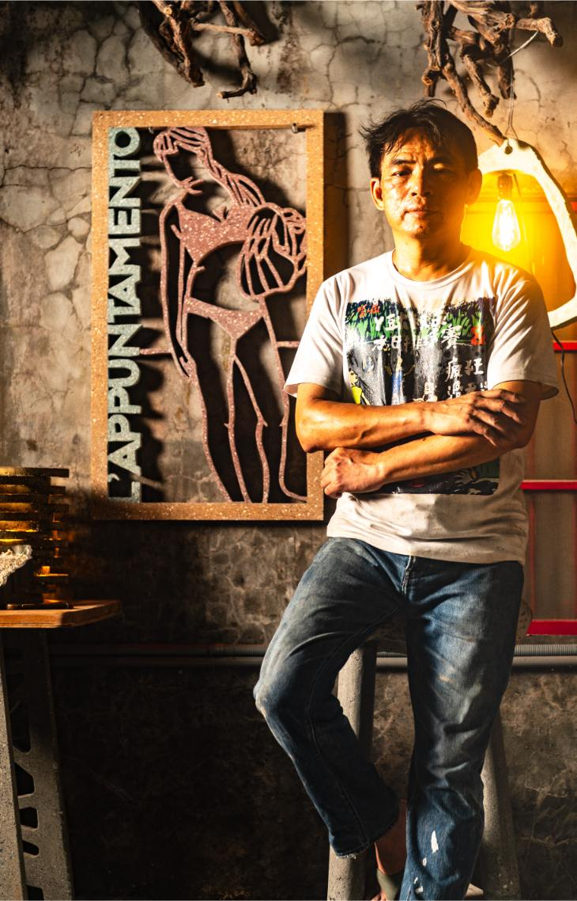
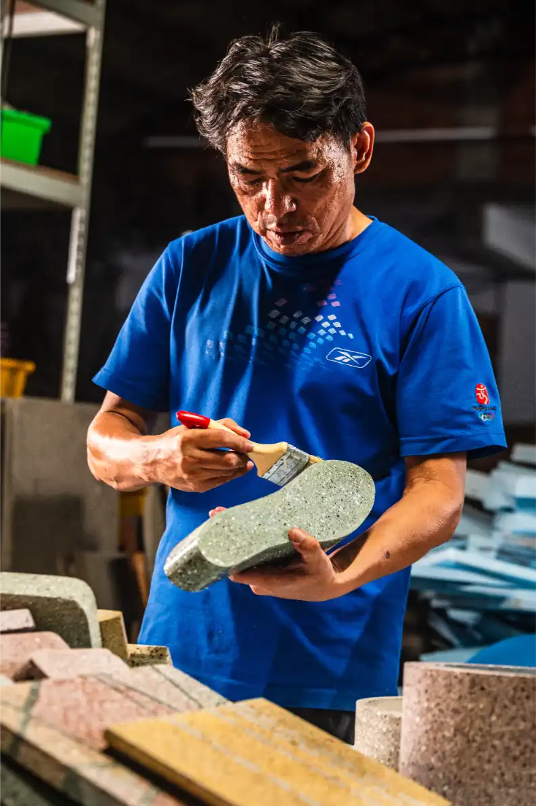
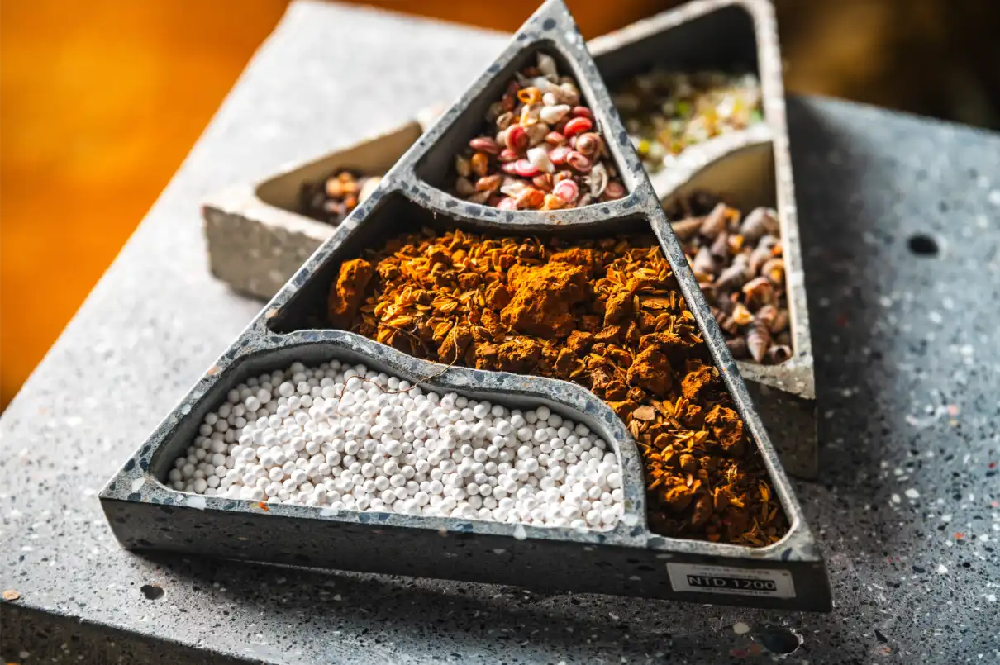
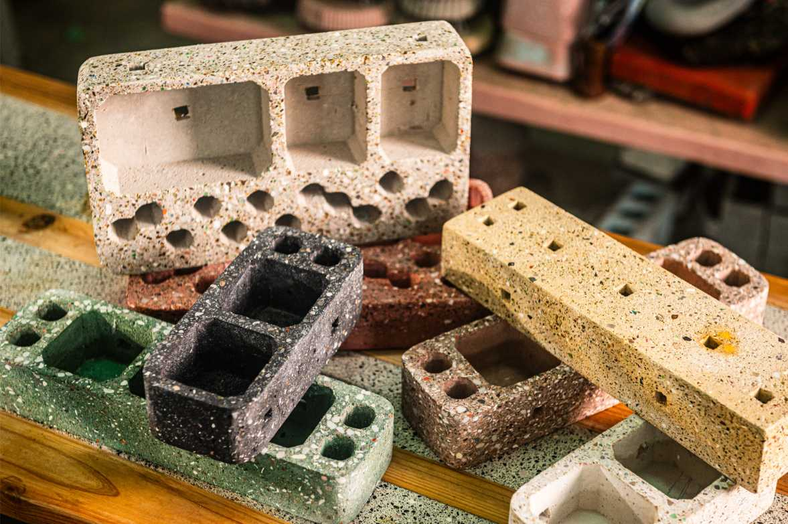
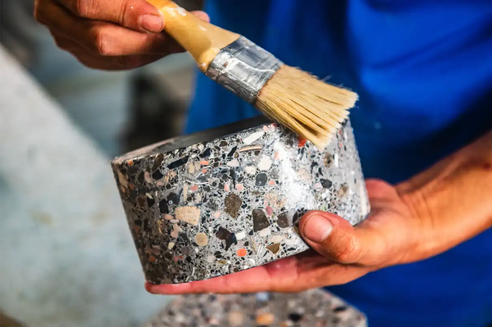
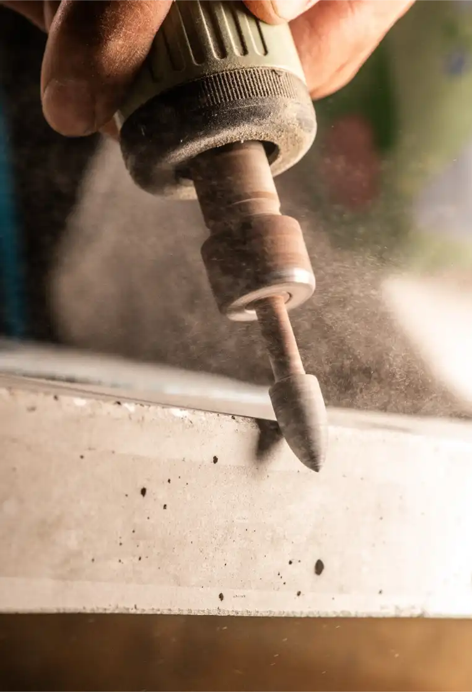
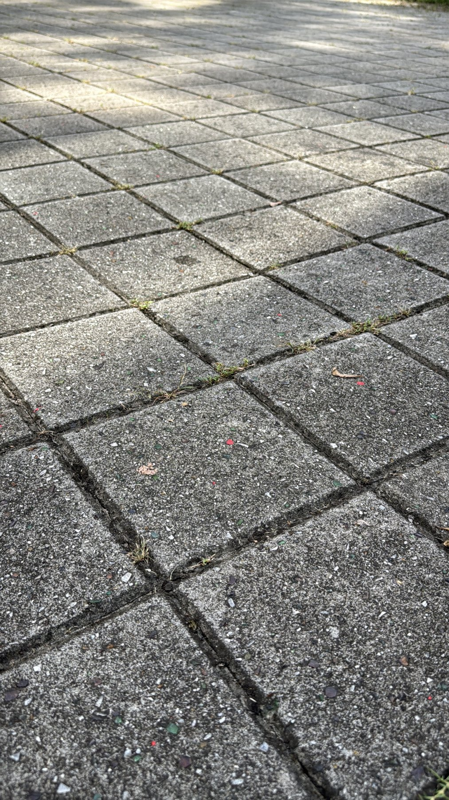

Personal Gift
再生混凝土桌上花器
適合生日、入厝、辦公桌小禮。小尺寸作品可做第一波直播與蝦皮成交品。
價格 待盤點材料 再生混凝土、廢磚或玻璃骨料平台 官網 / 粉專 / 蝦皮
九月起，Concredia.Lab 士敏文品將在每週六、日開放和美工作室。現場有免費咖啡，老師會做簡單導覽，帶你看材料、製程、作品與當週整理出來的現貨。因為人力有限，每週主題與拿出來的產品類別會不同，也會同步嘗試直播與線上銷售。
目前最重要的是立即變現，所以市集先不做成複雜活動，而是把老師已經有的作品、材料、故事與現場感變成可被看見、可被詢問、可被購買的入口。
每週固定開放，但因老師工作與人力有限，實際時段與當週主題會於粉絲團公告。
不是急著推銷，而是讓來的人可以坐下來，看材料、聊作品，也慢慢理解老師正在做的事。
導覽會以材料、工法、作品用途為主，讓第一次接觸的人也能快速理解作品為什麼值得留下。
有時是桌上小物，有時是畫作，有時是材料樣本或客製方案。先用小規模持續測試需求。




B2B、地方合作、自媒體拍攝與大型企劃仍會保留，但它們不一定能立即變現。現階段先把現有作品整理出來，讓工作室現場、直播、粉絲團、蝦皮與官網都能承接同一批商品。
等穩定有現金流後，再逐步加入 DIY 工坊、材料體驗、地方小農產品與更完整的品牌合作。
第一波不需要上太多件。先用既有作品作為展示版：容易拍、可說明材料、可標價格、可現場帶走或宅配。正式價格、尺寸、重量與庫存以實際盤點後更新。
適合生日、入厝、辦公桌小禮。小尺寸作品可做第一波直播與蝦皮成交品。

企業客戶、主管贈禮、開幕禮可用。功能清楚，適合做「留下來的禮物」主軸。

可用水蠟工序影片帶出手作感。適合粉專短影音與市集現場講解。

作為較高單價的品牌錨點，適合收藏、企業空間、退休紀念與重要客戶禮。

把蛋殼、貝殼、玻璃、砂石等材料故事做成企業禮贈提案，適合 ESG 與永續活動。

不當現貨賣，作為企業與地方單位理解客製可能性的案例，承接「掃一張桌子」計畫。
官網建立信任，粉專負責曝光與直播互動，蝦皮負責結帳與物流。內容共用商品母表，但文案與排序要依平台改寫。
放完整故事、材料、案例、工作室市集資訊與預約入口。
把實體導覽變成線上導覽，讓不能到現場的人也能看作品、問價格、下單。
每週公告、短影音、直播提醒、作品照片與私訊詢問。
現貨品項下單、規格確認、運費與出貨流程。
讓客人摸到重量、看到材質，現場成交或建立客製需求。
第一波不只打「水泥作品」，而是切進使用者已經有需求的情境：企業送禮、開幕禮、入厝禮、退休禮、永續禮品與中秋／年節採購。
未來可以擴充 DIY 工坊、材料體驗、在地小農產品與更完整的 B2B 合作；但目前先以能快速成交、能穩定直播、能上架的平台內容為主。

未來可規劃水磨、材料排列、簡易修飾或小物製作體驗，讓市集不只是買東西，也能理解工藝。

延伸來義案例與掃一張桌子的概念，但暫時不作為短期主要收入來源。

未來可搭配在地農產、地方伴手禮與材料故事，形成更完整的週末工作室選物。
可先透過粉絲團私訊確認當週開放時間、直播時間與現貨。企業禮贈、節慶送禮與客製畫作則建議先提供數量、預算、交期與使用情境。